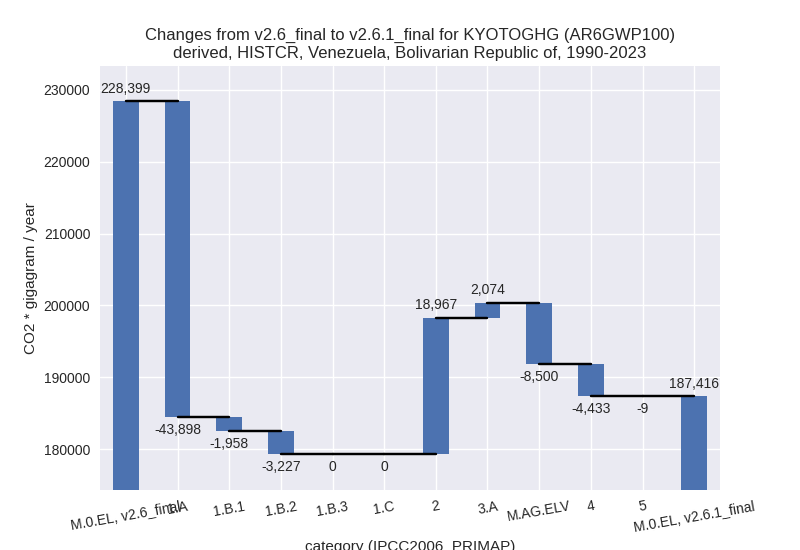

Changes in PRIMAP-hist v2.6.1_final compared to v2.6_final for Venezuela, Bolivarian Republic of
2025-03-19
Johannes Gütschow
Change analysis for Venezuela, Bolivarian Republic of for PRIMAP-hist v2.6.1_final compared to v2.6_final
Overview over emissions by sector and gas
The following figures show the aggregate national total emissions excluding LULUCF AR6GWP100 for the country reported priority scenario. The dotted linesshow the v2.6_final data.
The following figures show the aggregate national total emissions excluding LULUCF AR6GWP100 for the third party priority scenario. The dotted linesshow the v2.6_final data.
Overview over changes
In the country reported priority scenario we have the following changes for aggregate Kyoto GHG and national total emissions excluding LULUCF (M.0.EL):
- Emissions in 2023 have changed by 2.7%% (4518.42 Gg CO2 / year)
- Emissions in 1990-2023 have changed by -17.9%% (-40983.27 Gg CO2 / year)
In the third party priority scenario we have the following changes for aggregate Kyoto GHG and national total emissions excluding LULUCF (M.0.EL):
- Emissions in 2023 have changed by 0.5%% (750.58 Gg CO2 / year)
- Emissions in 1990-2023 have changed by -1.7%% (-3864.65 Gg CO2 / year)
Most important changes per scenario and time frame
In the country reported priority scenario the following sector-gas combinations have the highest absolute impact on national total KyotoGHG (AR6GWP100) emissions in 2023 (top 5):
- 1: 1.A, CO2 with -18465.32 Gg CO2 / year (-26.2%)
- 2: 2, CO2 with 15159.99 Gg CO2 / year (338.2%)
- 3: 1.B.2, CO2 with 14019.34 Gg CO2 / year (73.4%)
- 4: 2, HFCS (AR6GWP100) with -8936.44 Gg CO2 / year (-94.1%)
- 5: 1.B.2, CH4 with 7634.83 Gg CO2 / year (112.1%)
In the country reported priority scenario the following sector-gas combinations have the highest absolute impact on national total KyotoGHG (AR6GWP100) emissions in 1990-2023 (top 5):
- 1: 1.A, CO2 with -43851.18 Gg CO2 / year (-35.4%)
- 2: 2, CO2 with 22041.70 Gg CO2 / year (266.5%)
- 3: 1.B.2, CH4 with -7684.42 Gg CO2 / year (-32.4%)
- 4: M.AG.ELV, N2O with -7081.85 Gg CO2 / year (-73.9%)
- 5: 1.B.2, CO2 with 4442.14 Gg CO2 / year (33.0%)
In the third party priority scenario the following sector-gas combinations have the highest absolute impact on national total KyotoGHG (AR6GWP100) emissions in 2023 (top 5):
- 1: 4, CH4 with -4486.82 Gg CO2 / year (-37.5%)
- 2: 1.B.2, CH4 with 3116.92 Gg CO2 / year (45.8%)
- 3: 2, CO2 with 736.54 Gg CO2 / year (16.4%)
- 4: 3.A, CH4 with 525.50 Gg CO2 / year (1.9%)
- 5: M.AG.ELV, N2O with 446.75 Gg CO2 / year (4.8%)
In the third party priority scenario the following sector-gas combinations have the highest absolute impact on national total KyotoGHG (AR6GWP100) emissions in 1990-2023 (top 5):
- 1: 4, CH4 with -3300.04 Gg CO2 / year (-29.4%)
- 2: 1.B.2, CH4 with -756.92 Gg CO2 / year (-3.2%)
- 3: 2, CO2 with 123.27 Gg CO2 / year (1.5%)
- 4: 3.A, CH4 with 31.43 Gg CO2 / year (0.1%)
- 5: M.AG.ELV, N2O with 30.29 Gg CO2 / year (0.3%)
Notes on data changes
Here we list notes explaining important emissions changes for the country.
- CRT data from BTR1 covering 1990-2022 has been included. It is the
first usable country reported data and thus the first time that CR and
TP scenarios are different.
- 2023 emissions in the CR time-series are much smaller than individual; sector changes because these cancel partly. All major changes come directly from the new country reported data. the change in the IPPU sector comes from metal industry.
- Cumulative emissions changes in the CR time-series are mostly for the same sectors.
- Changes in the TP time-series come from updated EDGAR and FAO data. FAO data has been adjusted for the latest years while EDGAR has updated full time-series with the main change coming from the waste sector and fugitive emissions
Changes by sector and gas
For each scenario and time frame the changes are displayed for all individual sectors and all individual gases. In the sector plot we use aggregate Kyoto GHGs in AR6GWP100. In the gas plot we usenational total emissions without LULUCF.
country reported scenario
2023
1990-2023

third party scenario
2023
1990-2023
Detailed changes for the scenarios:
country reported scenario (HISTCR):
Most important changes per time frame
For 2023 the following sector-gas combinations have the highest absolute impact on national total KyotoGHG (AR6GWP100) emissions in 2023 (top 5):
- 1: 1.A, CO2 with -18465.32 Gg CO2 / year (-26.2%)
- 2: 2, CO2 with 15159.99 Gg CO2 / year (338.2%)
- 3: 1.B.2, CO2 with 14019.34 Gg CO2 / year (73.4%)
- 4: 2, HFCS (AR6GWP100) with -8936.44 Gg CO2 / year (-94.1%)
- 5: 1.B.2, CH4 with 7634.83 Gg CO2 / year (112.1%)
For 1990-2023 the following sector-gas combinations have the highest absolute impact on national total KyotoGHG (AR6GWP100) emissions in 1990-2023 (top 5):
- 1: 1.A, CO2 with -43851.18 Gg CO2 / year (-35.4%)
- 2: 2, CO2 with 22041.70 Gg CO2 / year (266.5%)
- 3: 1.B.2, CH4 with -7684.42 Gg CO2 / year (-32.4%)
- 4: M.AG.ELV, N2O with -7081.85 Gg CO2 / year (-73.9%)
- 5: 1.B.2, CO2 with 4442.14 Gg CO2 / year (33.0%)
Changes in the main sectors for aggregate KyotoGHG (AR6GWP100) are
- 1: Total sectoral emissions in 2022 are 92500.50 Gg
CO2 / year which is 57.4% of M.0.EL emissions. 2023 Emissions have
changed by 3.3% (3204.24 Gg CO2 /
year). 1990-2023 Emissions have changed by -29.9% (-49082.84 Gg CO2 / year). For 2023
the changes per gas
are:
For 1990-2023 the changes per gas are:
The changes come from the following subsectors:- 1.A: Total sectoral emissions in 2022 are 45382.11
Gg CO2 / year which is 49.1% of category 1 emissions. 2023 Emissions
have changed by -26.0% (-18426.23 Gg
CO2 / year). 1990-2023 Emissions have changed by -35.1% (-43898.49 Gg CO2 / year). For 2023
the changes per gas
are:
For 1990-2023 the changes per gas are:
There is no subsector information available in PRIMAP-hist. - 1.B.1: Total sectoral emissions in 2022 are 14.19
Gg CO2 / year which is 0.0% of category 1 emissions. 2023 Emissions have
changed by -80.0% (-56.93 Gg CO2 /
year). 1990-2023 Emissions have changed by -99.9% (-1957.51 Gg CO2 / year). For 2023
the changes per gas
are:
For 1990-2023 the changes per gas are:
There is no subsector information available in PRIMAP-hist. - 1.B.2: Total sectoral emissions in 2022 are
47104.21 Gg CO2 / year which is 50.9% of category 1 emissions. 2023
Emissions have changed by 83.5%
(21687.40 Gg CO2 / year). 1990-2023 Emissions have changed by -8.7% (-3226.83 Gg CO2 / year). For 2023
the changes per gas
are:
For 1990-2023 the changes per gas are:
There is no subsector information available in PRIMAP-hist.
- 1.A: Total sectoral emissions in 2022 are 45382.11
Gg CO2 / year which is 49.1% of category 1 emissions. 2023 Emissions
have changed by -26.0% (-18426.23 Gg
CO2 / year). 1990-2023 Emissions have changed by -35.1% (-43898.49 Gg CO2 / year). For 2023
the changes per gas
are:
- 2: Total sectoral emissions in 2022 are 20792.72 Gg
CO2 / year which is 12.9% of M.0.EL emissions. 2023 Emissions have
changed by 45.4% (6631.37 Gg CO2 /
year). 1990-2023 Emissions have changed by 147.3% (18966.88 Gg CO2 / year). For 2023
the changes per gas
are:
For 1990-2023 the changes per gas are: - M.AG: Total sectoral emissions in 2022 are 38201.01
Gg CO2 / year which is 23.7% of M.0.EL emissions. 2023 Emissions have
changed by -5.5% (-2221.40 Gg CO2 /
year). 1990-2023 Emissions have changed by -16.5% (-6425.52 Gg CO2 / year). For 2023
the changes per gas
are:
For 1990-2023 the changes per gas are:
The changes come from the following subsectors:- 3.A: Total sectoral emissions in 2022 are 34897.09
Gg CO2 / year which is 91.4% of category M.AG emissions. 2023 Emissions
have changed by 21.8% (6234.70 Gg
CO2 / year). 1990-2023 Emissions have changed by 7.7% (2074.13 Gg CO2 / year). For 2023 the
changes per gas
are:
For 1990-2023 the changes per gas are:
There is no subsector information available in PRIMAP-hist. - M.AG.ELV: Total sectoral emissions in 2022 are
3303.93 Gg CO2 / year which is 8.6% of category M.AG emissions. 2023
Emissions have changed by -72.1%
(-8456.10 Gg CO2 / year). 1990-2023 Emissions have changed by -70.8% (-8499.65 Gg CO2 / year). For 2023
the changes per gas
are:
For 1990-2023 the changes per gas are:
There is no subsector information available in PRIMAP-hist.
- 3.A: Total sectoral emissions in 2022 are 34897.09
Gg CO2 / year which is 91.4% of category M.AG emissions. 2023 Emissions
have changed by 21.8% (6234.70 Gg
CO2 / year). 1990-2023 Emissions have changed by 7.7% (2074.13 Gg CO2 / year). For 2023 the
changes per gas
are:
- 4: Total sectoral emissions in 2022 are 9289.32 Gg
CO2 / year which is 5.8% of M.0.EL emissions. 2023 Emissions have
changed by -25.9% (-3178.13 Gg CO2 /
year). 1990-2023 Emissions have changed by -38.4% (-4432.69 Gg CO2 / year). For 2023
the changes per gas
are:
For 1990-2023 the changes per gas are: - 5: Total sectoral emissions in 2022 are 448.22 Gg
CO2 / year which is 0.3% of M.0.EL emissions. 2023 Emissions have
changed by 19.3% (82.34 Gg CO2 /
year). 1990-2023 Emissions have changed by -1.0% (-9.12 Gg CO2 / year). For 2023 the
changes per gas
are:
third party scenario (HISTTP):
Most important changes per time frame
For 2023 the following sector-gas combinations have the highest absolute impact on national total KyotoGHG (AR6GWP100) emissions in 2023 (top 5):
- 1: 4, CH4 with -4486.82 Gg CO2 / year (-37.5%)
- 2: 1.B.2, CH4 with 3116.92 Gg CO2 / year (45.8%)
- 3: 2, CO2 with 736.54 Gg CO2 / year (16.4%)
- 4: 3.A, CH4 with 525.50 Gg CO2 / year (1.9%)
- 5: M.AG.ELV, N2O with 446.75 Gg CO2 / year (4.8%)
For 1990-2023 the following sector-gas combinations have the highest absolute impact on national total KyotoGHG (AR6GWP100) emissions in 1990-2023 (top 5):
- 1: 4, CH4 with -3300.04 Gg CO2 / year (-29.4%)
- 2: 1.B.2, CH4 with -756.92 Gg CO2 / year (-3.2%)
- 3: 2, CO2 with 123.27 Gg CO2 / year (1.5%)
- 4: 3.A, CH4 with 31.43 Gg CO2 / year (0.1%)
- 5: M.AG.ELV, N2O with 30.29 Gg CO2 / year (0.3%)
Changes in the main sectors for aggregate KyotoGHG (AR6GWP100) are
- 1: Total sectoral emissions in 2022 are 90025.08 Gg
CO2 / year which is 58.3% of M.0.EL emissions. 2023 Emissions have
changed by 3.2% (3131.69 Gg CO2 /
year). 1990-2023 Emissions have changed by -0.5% (-755.33 Gg CO2 / year). For 2023
the changes per gas
are:
The changes come from the following subsectors:- 1.A: Total sectoral emissions in 2022 are 61315.93 Gg CO2 / year which is 68.1% of category 1 emissions. 2023 Emissions have changed by -0.0% (-34.35 Gg CO2 / year). 1990-2023 Emissions have changed by -0.0% (-13.46 Gg CO2 / year).
- 1.B.1: Total sectoral emissions in 2022 are 118.77
Gg CO2 / year which is 0.1% of category 1 emissions. 2023 Emissions have
changed by 67.0% (47.65 Gg CO2 /
year). 1990-2023 Emissions have changed by 0.5% (10.53 Gg CO2 / year). For 2023 the
changes per gas
are:
There is no subsector information available in PRIMAP-hist. - 1.B.2: Total sectoral emissions in 2022 are
28590.38 Gg CO2 / year which is 31.8% of category 1 emissions. 2023
Emissions have changed by 12.0%
(3118.39 Gg CO2 / year). 1990-2023 Emissions have changed by -2.0% (-752.39 Gg CO2 / year). For 2023
the changes per gas
are:
For 1990-2023 the changes per gas are:
There is no subsector information available in PRIMAP-hist.
- 2: Total sectoral emissions in 2022 are 14528.97 Gg
CO2 / year which is 9.4% of M.0.EL emissions. 2023 Emissions have
changed by 4.7% (685.82 Gg CO2 /
year). 1990-2023 Emissions have changed by 0.9% (118.81 Gg CO2 / year). For 2023 the
changes per gas
are:
- M.AG: Total sectoral emissions in 2022 are 41551.50
Gg CO2 / year which is 26.9% of M.0.EL emissions. 2023 Emissions have
changed by 3.2% (1298.35 Gg CO2 /
year). 1990-2023 Emissions have changed by 0.2% (77.20 Gg CO2 / year). For 2023 the
changes per gas
are:
The changes come from the following subsectors:- 3.A: Total sectoral emissions in 2022 are 29207.04 Gg CO2 / year which is 70.3% of category M.AG emissions. 2023 Emissions have changed by 1.9% (544.87 Gg CO2 / year). 1990-2023 Emissions have changed by 0.1% (32.92 Gg CO2 / year).
- M.AG.ELV: Total sectoral emissions in 2022 are
12344.45 Gg CO2 / year which is 29.7% of category M.AG emissions. 2023
Emissions have changed by 6.4%
(753.48 Gg CO2 / year). 1990-2023 Emissions have changed by 0.4% (44.28 Gg CO2 / year). For 2023 the
changes per gas
are:
There is no subsector information available in PRIMAP-hist.
- 4: Total sectoral emissions in 2022 are 7984.36 Gg
CO2 / year which is 5.2% of M.0.EL emissions. 2023 Emissions have
changed by -36.3% (-4447.62 Gg CO2 /
year). 1990-2023 Emissions have changed by -28.5% (-3296.21 Gg CO2 / year). For 2023
the changes per gas
are:
For 1990-2023 the changes per gas are: - 5: Total sectoral emissions in 2022 are 448.22 Gg
CO2 / year which is 0.3% of M.0.EL emissions. 2023 Emissions have
changed by 19.3% (82.34 Gg CO2 /
year). 1990-2023 Emissions have changed by -1.0% (-9.12 Gg CO2 / year). For 2023 the
changes per gas
are: